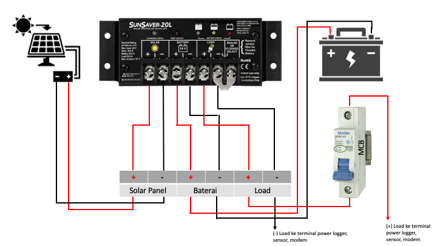

Skema Sistem Power
Attention
- Jika pada sistem power AAWS masih ada sekering maka sekering harus dicabut.
- Setelah sekering dicabut, masing-masing kabel dari solar panel dan baterai dihubungkan langsung ke solar regulator sesuai dengan slot-slotnya.
- Load+ dari solar regulator harus dipasang MCB (6A) terlebih dahulu sebelum dipasang ke terminal logger, modem dan sensor.
- Pemasangan kabel Load+ pada MCB agar disesuaikan dengan posisi OFF-ON yang tertera pada setiap merk MCB.
Solar Regulator Phocos PWM

Solar Regulator SunSaver PWM/Lainnya

Solar Regulator Phocos MPPT
Info
- 1 - Negative battery terminal
- 2 - Positive battery terminal
- 3 - Negative panel terminal
- 4 - Positive panel terminal
- 5 - Negative load terminal
- 6 - Positive load terminal
- 7 - Dimming signal terminal
Hint
-
Solar LED Status
- ON - Charging failure (overvoltage / overcurrent)
- OFF - Charging OK
-
Battery LED Status
- ON - Controller connected to battery, night detected
- FLASH - Controller connected to battery, day detected
- OFF - No battery connected
-
Load LED Status
- ON - Load low/high voltage disconnect (LVD/HVD)
- FLASH - Load overcurrent
- OFF - Load OK
Solar Regulator Victron MPPT
Info
Download Victron Connect di App Store atau Play Store lalu lakukan pairing bluetooth. Gunakan Password: 000000 bila diminta.